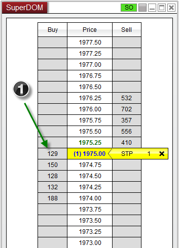
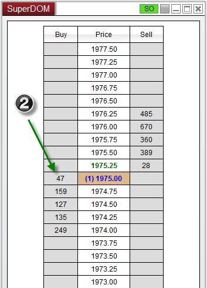
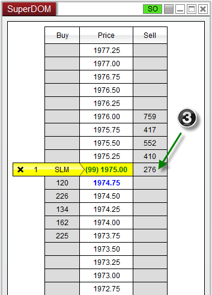
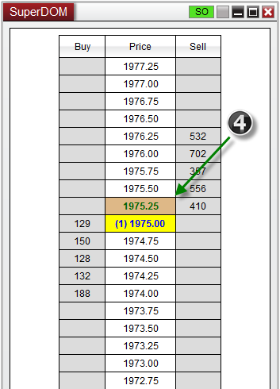
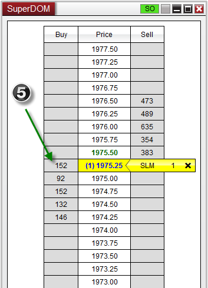
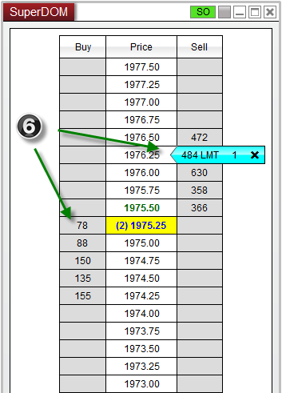

|
<< Click to Display Table of Contents >> Simulated Stop Orders |


|
Simulated Stop Orders
|
<< Click to Display Table of Contents >> Simulated Stop Orders |
|
A Simulated Stop order (SS) is a conditional locally held (PC simulated) order type that allows you to execute either a market or a limit order once the market touches your order price and satisfies a user defined volume trigger. SS orders are very powerful and can be misused if not fully understood. Please take the time to review this section in it's entirety prior to using this order type.
Note: Simulated Stop (SS) orders are not supported in the NinjaTrader Direct Edition. |
 Understanding the benefits of the Simulated Stop
Understanding the benefits of the Simulated Stop
Benefits•Hide your order from the market place •Delay the triggering of a stop-market or stop-limit order (prevent having your position stopped out prematurely due to a quick drop and pop into your stop loss price level) •Execute a limit order at an improved price from the stop price trigger (for example, you wish to trigger a buy limit order at 999 once the market price reaches 1000) |
 Understanding the risks of the Simulated Stop
Understanding the risks of the Simulated Stop
Risks•SS orders are held and simulated locally on your PC and are therefore subject to issues such as loss of internet connection and computer crashes •SS orders require stable and reliable market data since they are simulated; if market data stops flowing the SS order stops simulating •SS market order types can experience slippage during high volume periods and/or highly volatile markets
|
 Understanding the SS Volume Trigger
Understanding the SS Volume Trigger
Volume TriggerA SS order requires a Volume Trigger value to be set. This is the number of shares/contracts that represents a floor that once penetrated will trigger the SS order. SS orders trigger once the market price is trading at the SS order price and the Volume Trigger condition is breached. Volume Triggers for Stop Loss orders are set as part of a Stop Strategy, Volume Triggers for all other stop orders are set via the properties dialog window of any order entry window.
SS orders are set to Initialized state (see Order State Definitions) and are color coded yellow in all of the NinjaTrader order display windows. Once triggered, either a limit order or a market order is submitted.
|
Sell Stop-Market ExampleOrder Type - Sell Stop-Market Stop Price - 1975.00 Volume Trigger - 100
1.In the example below, even though the Bid price has reached our Sell Stop Price of 1975.00, the order has not executed because the Bid volume is still greater than our Volume Trigger of 100. 2. As soon as the Bid volume falls below the Volume Trigger at the Stop Price level, then a market order is issued, which takes us into position at the market price.

Buy Stop-Limit ExampleOrder Type - Buy Stop-Limit Stop Price - 1975.00 Limit Price - 1975.25 (1 tick offset) Volume Trigger - 100
3. In this example, we again see that the Ask price has reached our Buy Stop Price of 1975.00, however the order has not executed because the Ask volume is still greater than our Volume Trigger of 100 4. As soon as the Ask volume falls below the Volume Trigger at our Stop Price, a Limit order is immediately submitted at the price of 1975.25, which takes us into position at our limit price or better.

Sell Stop with Improved Limit Price ExampleOrder Type - Sell Stop-Limit Stop Price - 1975.25 Limit Price - 1976.25 (- 4 tick offset) Volume Trigger - 100
5. This example will once again trigger as the Bid price trades at our Stop Price of 1975.25 and the Bid volume is less than 100 contracts. 6. The interesting thing about this set up is that what we are doing is triggering a limit order at a higher price in order to try and get a better fill. This order strategy is not possible with standard order types and can only be done using NinjaTrader SS technology. Once triggered, a limit order is submitted to sell at a price of 1976.25, 4 tics above our Stop Price.

|
 Understanding when to avoid using Simulated Stop orders
Understanding when to avoid using Simulated Stop orders
Avoid SS Orders•During high volume and trade rate periods such as the first five minutes of trading •During major economic events that can substantially affect volatility •Markets that consistently trade with a large spread between the ask and bid price •Markets that trade where the ask or bid price can consistently change by more than one tick |